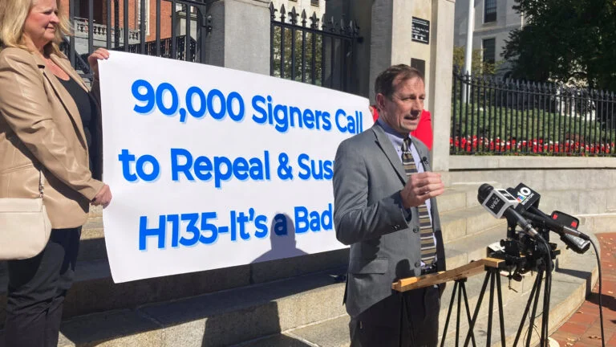

01
梵蒂冈高级官员称教皇的癌症诊断是教皇职位的“游戏规则改变者”
Top Vatican official says pope’s cancer diagnosis a ‘game-changer’ for the papacy
梵蒂冈高级官员表示，教皇的癌症诊断将改变人们对他的看法。
A top Vatican official stated that the pope's cancer diagnosis will change how people perceive him.
Boston.com · 2026-10-27
原始报道 / Original source ↗02
以色列选举未见明确赢家，出口民调显示内塔尼亚胡命运悬而未决
No clear winner in Israeli election, exit polls suggest, as Netanyahu’s fate hangs in the balance
出口民调显示以色列选举结果不明确，内塔尼亚胡的政治前途不明。
Exit polls suggest an inconclusive result in the Israeli election, leaving Netanyahu's fate uncertain.
Boston.com · 2026-10-27
原始报道 / Original source ↗03
房地产经纪人如何在房主准备上市前生成卖家线索
How real estate agents can generate seller leads before homeowners are ready to list
文章探讨了房地产经纪人在房主准备上市之前如何获取潜在卖家线索。
The article discusses how real estate agents can generate potential seller leads before homeowners are ready to list.
Boston Agent Magazine · 2026-10-27
原始报道 / Original source ↗04

马萨诸塞州和爱达荷州将枪支问题列入投票议程
Massachusetts and Idaho put guns on the ballot. One seeks to restrict them, the other to honor them.
马萨诸塞州和爱达荷州在投票中分别寻求限制和尊重枪支。
Massachusetts and Idaho are putting gun issues on the ballot, with one seeking to restrict and the other to honor.
Boston.com · 2026-10-25
原始报道 / Original source ↗